Tag 8 – Die erste große Reise
By Evita Bley
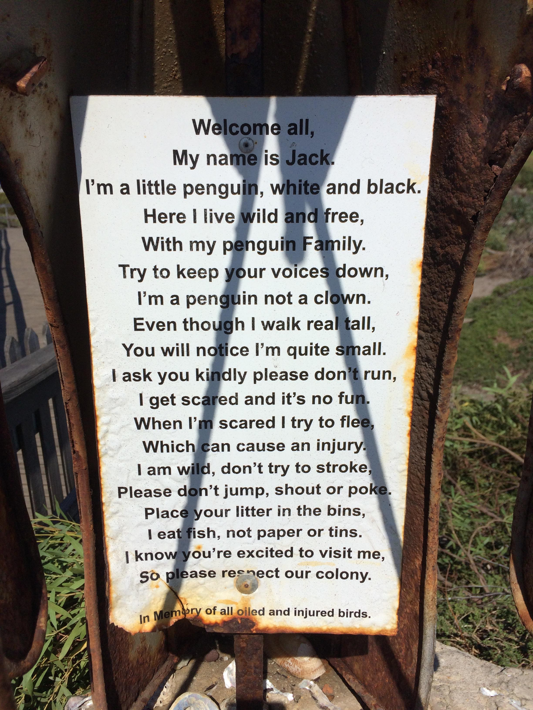
Herzlich willkommen, mein Name ist Jack. Ein kleiner Pinguin, schwarz und weiß. Hier lebe ich, wild und frei, mit meiner Pinguin Familie. Versucht doch bitte leise zu sein, ich bin ein Pinguin, kein Clown. Auch wenn ich aufrecht gehe, wirst du merken, ich bin klein. Ich bitte dich, renne nicht, ich hab dann Angst und das ist nicht lustig. Wenn ich Angst hab, fliehe ich, und dann vielleicht verletz ich mich. Ich bin wild, berühr mich nicht, bitte spring nicht, schrei nicht, stups mich nicht. Pack den Müll in die Eimer rein, ich esse Fisch, kein Papier oder Dosen. Ich weiß du freust dich, mich zu sehen, also bitte respektiere meine Kolonie.
In Gedenken an all die verölten und verletzten Vögel.
Guten Morgen bewölkter Himmel. Ja auch hier gibt es Wolken und man sagt, es würde ab und zu sogar regnen! Jeanine muss heute arbeiten in Stellenbosch. Wir fragen sie noch, was man vielleicht in der „Nähe“ noch so unternehmen kann und sie empfiehlt uns, fahrt nach Kleinmond, da gibt es Höhlen. Es gibt auch die Cango-Caves. Wir dachten, das sind wohl dieselben, lass uns zu den Cango-Caves fahren. Bis wir herausfinden, dass es nicht dieselben sind. Die großen Höhlen sind gut 4,5 Stunden Fahrt entfernt … das ist uns für die erste Tour doch etwas weit weg.
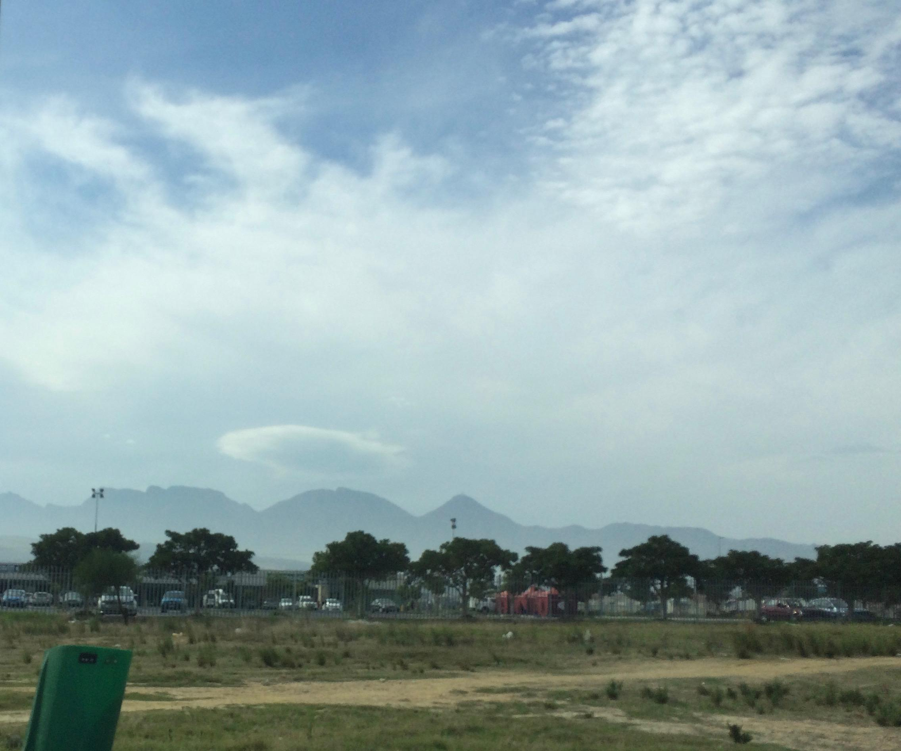
Aber Kleinmond ist ca. 1,5 Stunden weg und so entscheiden wir uns, in diese Richtung zu fahren. Das heißt, immer die R44 entlang. Man könnte auch sagen, die beeindruckendste, geilste, schönste Straße der ganzen Welt! Direkt an der Küste entlang, links unendlich hohe Berge und rechts das Meer.
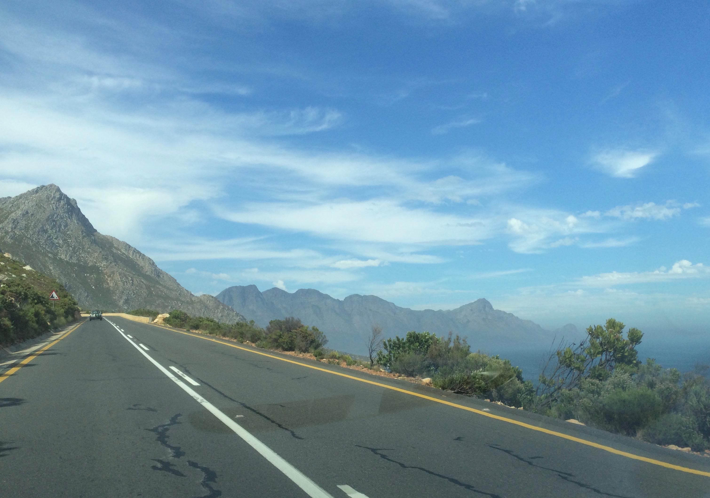
Die ganze Zeit. Hinter jeder Kurve ein großartiger Blick nach dem anderen. Man könnte meinen, irgendwer hätte das mit Absicht da so hingebastelt. Ich werde hier wie üblich ein paar Bilder einfügen, aber es wird wohl noch einen zweiten Post geben, in den ich eine größere Auswahl packe für die Leute, die es interessiert. Dafür bitte hier entlang.
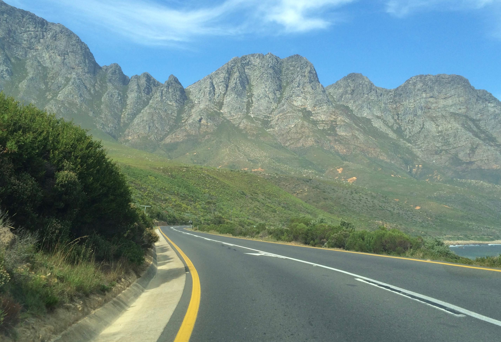
Als wir vor’m Losfahren mal auf die Route schauten sahen wir, dass es zwischendurch eine schöne Bucht geben soll, die man sich unbedingt anschauen soll. Wir fahren also ca. 50 Kilometer und sind in Betty’s Bay. Da steht ein Schild „Penguine da lang“ (oder so ähnlich). Wir fahren dem Schild nach und kommen an eine Stelle der Straße, die gerade gebaut wird und es eine Umleitung gibt.
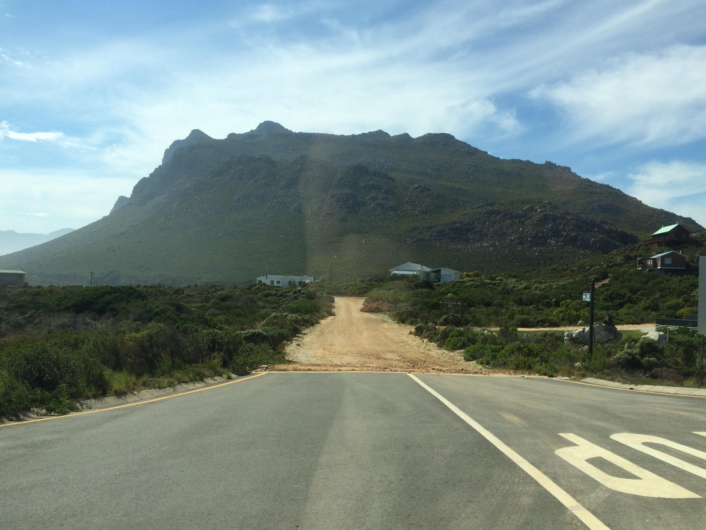
Das heißt wiederum, kein Asphalt mehr für unser hübsches Auto, sondern Schotterwege durch ein kleines Dörfchen mit vereinzelten Häusern. Wir sind etwas verloren, aber folgen einfach dem Weg und nach einer ganzen Weile und ein paar mal „links-rechts“ kommen wir wieder an die große Straße. Hier steht nichts mehr von Pinguinen :( ich habe die Hoffnung schon fast aufgegeben und wollte weiter nach Kleinmond fahren, als Martin sagte, hier entlang, hier sollte es sein.
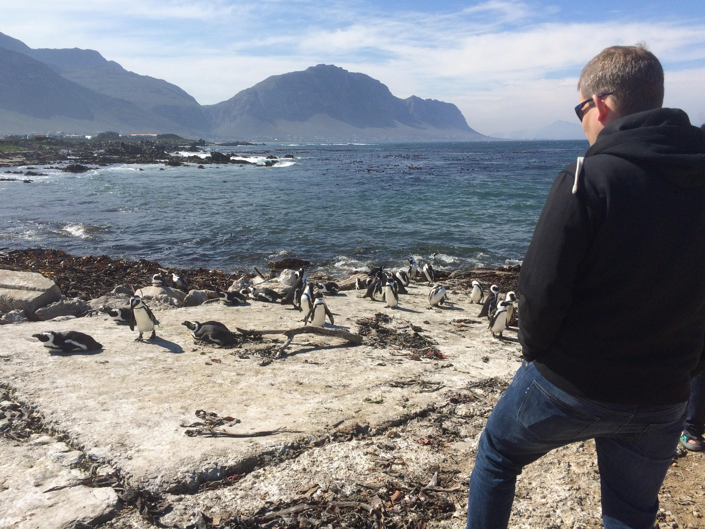
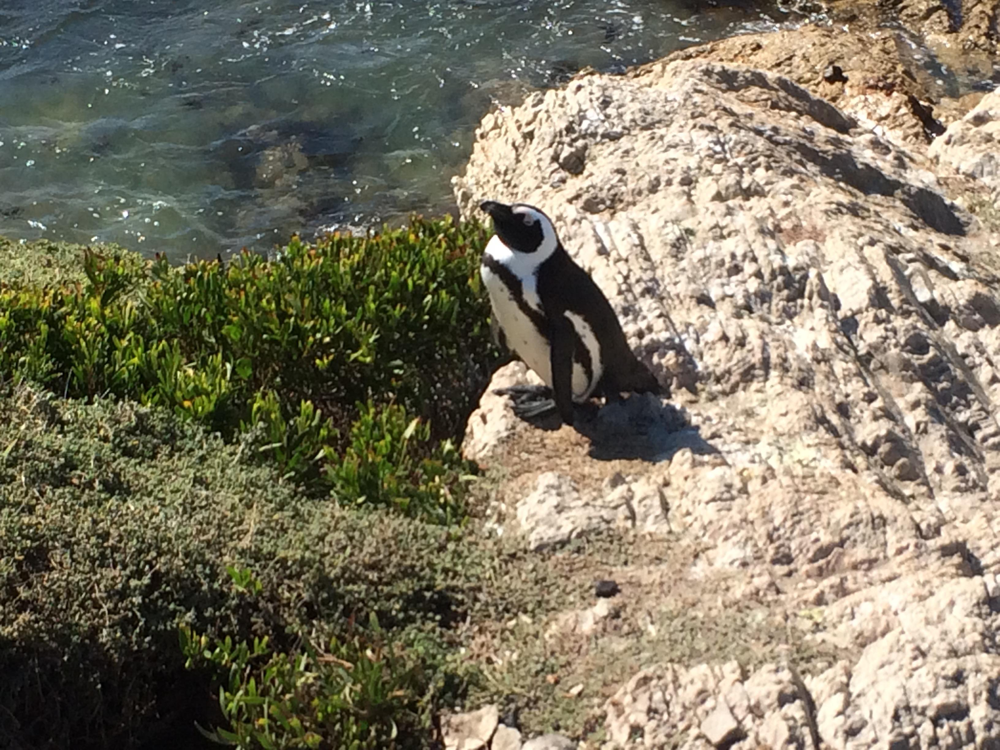
Und plötzlich stehen wir vor einem kleinen Parkplatz und es werden Pinguine angepriesen (also in Bildern, nicht zum essen!). Wir parken und wir sehen das Meer und da, plötzlich ca. 100 Pinguine, die am Strand rumstehen und Sonne tanken. Waaaaah! Pinguine einfach so mitten in der Landschaft. Boah sind die niedlich, Himmel! Kein Eintritt, nichts. Einfach nur ein Schild auf Englisch „genießen Sie Ihren Aufenthalt“ und schon stehen wir vor niedlichen kleinen, lustigen Pinguinen.
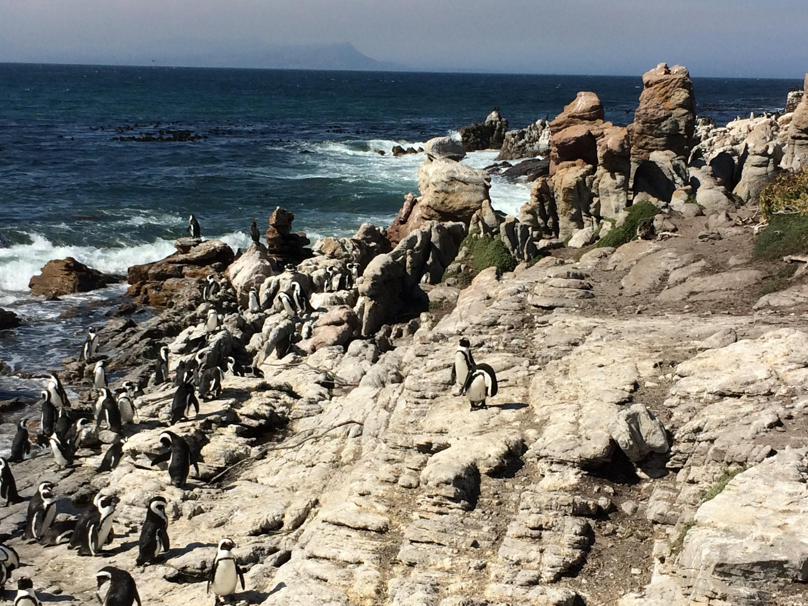
Es gibt einen kleinen Weg mitten durch die Kolonie. Am Eingang davon ein Hüttchen an dem steht: „Adults 10 Rand“. Nach langem Überlegen (das ist ein Spaß, 10 Rand sind ca. 0,80 Euro) entscheiden wir uns hineinzugehen und nach einer geführten Tour. Der nette Mann sagt, ja kleinen Moment, ich warte nur noch darauf, dass meine Kollegin zurückkommt, dann geht es los.
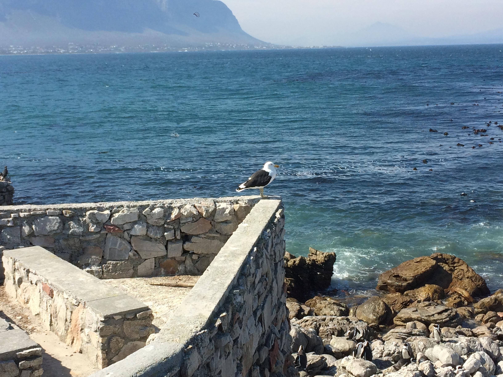
Was wir bekommen ist eine halbe Stunde individuelle Tour (mal wieder nur wir zwei) und können alles fragen was uns einfällt. Und das für einen knappen Euro. Wir sind ein bisschen geplättet. Es ist gerade Brutzeit, also sind in den Nestern lauter kleine Pinguine und Eier. Vielleicht kommen wir in einer Woche wieder, wenn dann die Küken geschlüpft sind :) Aber auch ohne die ganz Kleinen ist es schon wahnsinnig spannend und schön.
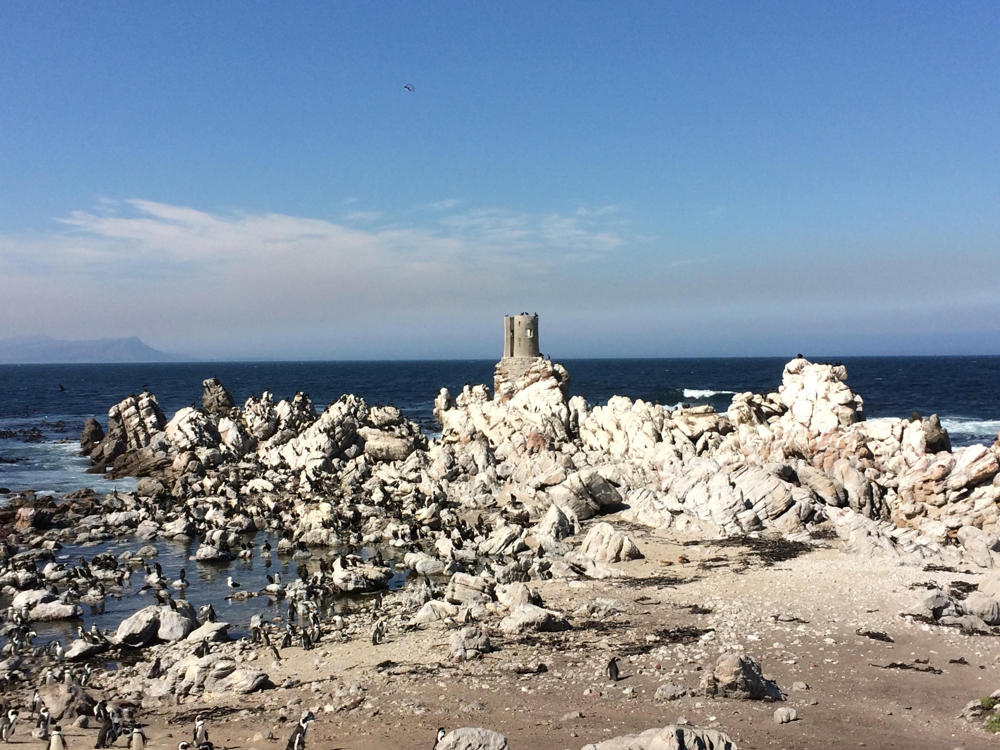
Wir haben herrlichstes Wetter und Martin jetzt einen Sonnenbrand … Gerade als wir mit der Tour fertig sind, sehen wir auf der anderen Seite der Bucht am Berg ein paar kleine Nebelwolken aufsteigen. Wir denken uns nichts weiter dabei, außer dass es schon ziemlich schnell mehr Nebel und mehr Wolke wird, aber erst mal müssen wir etwas essen.

Es gibt ein kleines Restaurant, oder sagen wir Imbiss, und wir bestellen uns etwas. 10 Minuten später hat sich der ganze Himmel über uns mit dunklen, tiefhängenden Regenwolken zugezogen. Na das kann ja lustig werden. Wir entscheiden, denselben Weg wieder nach Hause zu fahren. (Links aus dem Fenster raus ist es für Martin jetzt auch etwas einfacher, Bilder während der Fahrt zu machen).
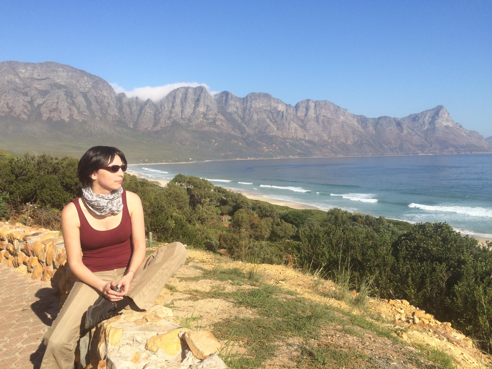
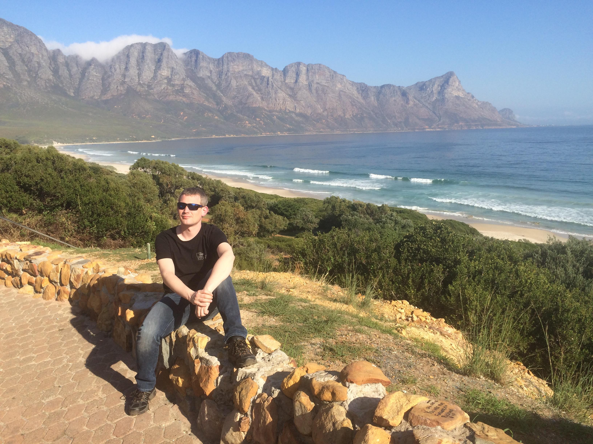
Es regnet nicht. Im Gegenteil, als wir über den Schotterweg sind und wieder auf der R44 strahlt uns die Sonne wieder entgegen und der Heimweg ist wieder herrlich wie eh und je. Noch eben schnell in die Mall und ein paar Sachen zum Essen kaufen. Es soll heute oder morgen Kartoffelpuffer á la Bley geben. Wir sind ziemlich müde, als wir ankommen und verbringen noch einen ruhigen Abend daheim.
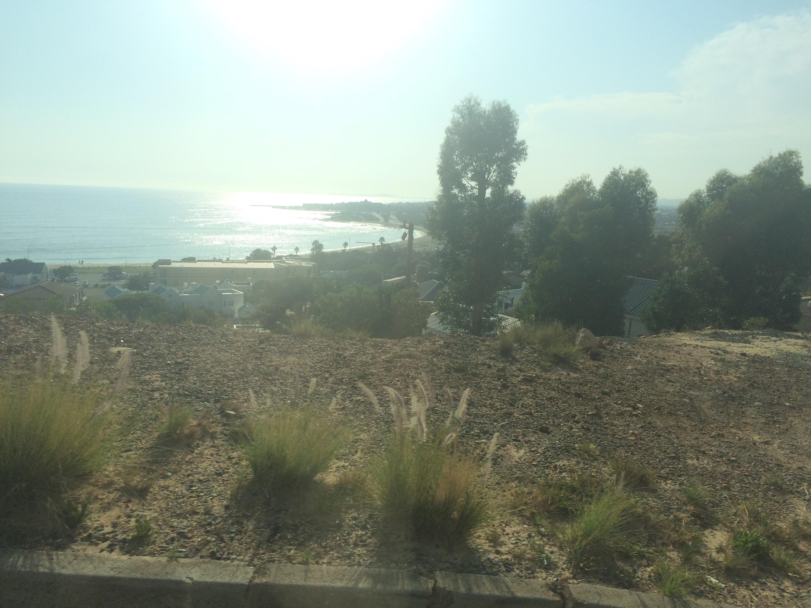
Ich habe von diesem Tag nichts erwartet und dann ist es einer der schönsten Ausflüge geworden, die ich mir vorstellen kann!